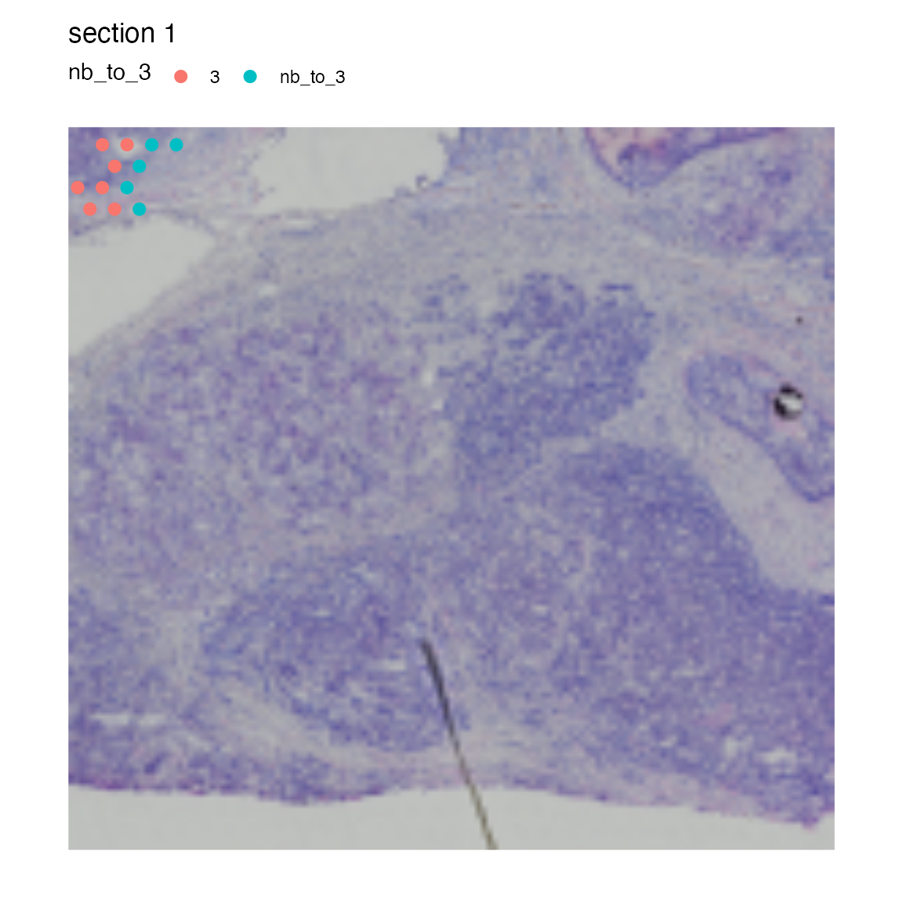

Region neighbors
Last compiled: 18 September 2024
region_neighbors.RmdIn this notebook, we’ll have a look at how you can use spatial
methods in semla. we will continue with the same Seurat
object that we created in the ‘radial
distances’ tutorial. If you haven’t downloaded and processed the
data yet, you should go back to that tutorial before continuing with the
analysis presented here.
Region neighbors
In the previous tutorial we calculated radial distances from the center of a tumor region. These distances can easily be used to define a ‘tumor microenvironment’ as well as the leading edge of the tumor.
If you are only interested in finding spots that are located at the
border of a region of interest, you can use the
RegionNeighbors() function instead.
RegionNeighbors automatically detects spots that are
located inside or outside the border or both.
Let’s demonstrate how it works with an example. If we want to find
the spots that are neighbors to cluster 3, we set
column_name = "seurat_clusters" and
column_labels = "3":
se <- RegionNeighbors(se,
column_name = "seurat_clusters",
column_labels = "3")## ℹ Finding neighboring spots for '3'## → Excluding neighbors from the same group## → 169 neighbors left## → Returning neighborsIn our meta.data slot, we now have a new column called
“nb_to_3”, short for “neighbors to cluster 3”. In the plot below, you
can see that this column provides information about which spots are
outside the border of cluster 3.
MapLabels(se, crop_area = c(0.45, 0.6, 0.8, 0.93),
column_name = "nb_to_3", drop_na = TRUE,
image_use = "raw", pt_size = 3)
We can tweak the function to identify the inner border instead,
i.e. the spots that are located at the “tumor edge”. When we run
RegionNeighbors with mode="inner", we get a
column called inner_border_3 which tells us what spots are
on the “tumor edge”.
se <- RegionNeighbors(se,
column_name = "seurat_clusters",
column_labels = "3",
mode = "inner")## ℹ Finding neighboring spots for '3'## → Returning neighbors
MapLabels(se,
crop_area = c(0.45, 0.6, 0.8, 0.93),
column_name = "inner_border_3",
image_use = "raw",
pt_size = 3,
drop_na = TRUE)
If we want to get both the inner and outer borders, we set
mode="inner_outer.
NB: If we run a mode that returns “outer” border spots, the prefix of
the returned column will be “nb_to_” by default. This behavior can be
overridden by setting the column_key=...
se <- RegionNeighbors(se, column_name = "seurat_clusters",
column_labels = "3", mode = "inner_outer")## ℹ Finding neighboring spots for '3'## → Returning neighbors
MapLabels(se, crop_area = c(0.45, 0.6, 0.8, 0.93),
column_name = "nb_to_3",
image_use = "raw", pt_size = 3, drop_na = TRUE)
The last mode (mode="all_inner_outer") allows us to
select the outer border spots while keeping all spots belonging to our
cluster of interest.
se <- RegionNeighbors(se, column_name = "seurat_clusters", column_key = "(all)nb_to_",
column_labels = "3", mode = "all_inner_outer")## ℹ Finding neighboring spots for '3'## → Returning neighbors
MapLabels(se, crop_area = c(0.45, 0.6, 0.8, 0.93),
column_name = "(all)nb_to_3",
image_use = "raw", pt_size = 3, drop_na = TRUE)
One example of how this information can be used is to run a DE test between the outer and inner borders to find genes that are differentially expressed in spots just outside the “tumor edge”:
border_markers <- FindMarkers(se, ident.1 = "nb_to_3",
ident.2 = "3", group.by = "nb_to_3")
# Filter results
border_markers_up <- border_markers |>
filter(p_val_adj < 0.01, avg_log2FC > 0) |>
arrange(-avg_log2FC) |>
slice_head(n = 10)
# Subset Seurat object to include border spots
se_border_spots <- SubsetSTData(se, expression = nb_to_3 %in% c("3", "nb_to_3"))
# Violin plot
VlnPlot(se_border_spots, features = rownames(border_markers_up), group.by = "nb_to_3") &
theme(axis.title = element_blank())
If you want to select a wider band of spots surrounding a ROI, you can calculate radial distances and set thresholds instead.
Package version
-
semla: 1.1.6
Session info
## R version 4.4.0 (2024-04-24)
## Platform: aarch64-apple-darwin20
## Running under: macOS Sonoma 14.5
##
## Matrix products: default
## BLAS: /Library/Frameworks/R.framework/Versions/4.4-arm64/Resources/lib/libRblas.0.dylib
## LAPACK: /Library/Frameworks/R.framework/Versions/4.4-arm64/Resources/lib/libRlapack.dylib; LAPACK version 3.12.0
##
## locale:
## [1] en_US.UTF-8/en_US.UTF-8/en_US.UTF-8/C/en_US.UTF-8/en_US.UTF-8
##
## time zone: Europe/Stockholm
## tzcode source: internal
##
## attached base packages:
## [1] stats graphics grDevices datasets utils methods base
##
## other attached packages:
## [1] patchwork_1.3.0 tibble_3.2.1 semla_1.1.6 ggplot2_3.5.0
## [5] dplyr_1.1.4 SeuratObject_4.1.4 Seurat_4.3.0.1
##
## loaded via a namespace (and not attached):
## [1] RColorBrewer_1.1-3 rstudioapi_0.16.0 jsonlite_1.8.8
## [4] magrittr_2.0.3 magick_2.8.4 spatstat.utils_3.1-0
## [7] farver_2.1.2 rmarkdown_2.28 fs_1.6.4
## [10] ragg_1.3.3 vctrs_0.6.5 ROCR_1.0-11
## [13] spatstat.explore_3.3-2 forcats_1.0.0 htmltools_0.5.8.1
## [16] sass_0.4.9 sctransform_0.4.1 parallelly_1.38.0
## [19] KernSmooth_2.23-24 bslib_0.8.0 htmlwidgets_1.6.4
## [22] desc_1.4.3 ica_1.0-3 plyr_1.8.9
## [25] plotly_4.10.4 zoo_1.8-12 cachem_1.1.0
## [28] igraph_2.0.3 mime_0.12 lifecycle_1.0.4
## [31] pkgconfig_2.0.3 Matrix_1.7-0 R6_2.5.1
## [34] fastmap_1.2.0 fitdistrplus_1.2-1 future_1.34.0
## [37] shiny_1.9.1 digest_0.6.37 colorspace_2.1-1
## [40] tensor_1.5 irlba_2.3.5.1 textshaping_0.4.0
## [43] labeling_0.4.3 progressr_0.14.0 fansi_1.0.6
## [46] spatstat.sparse_3.1-0 httr_1.4.7 polyclip_1.10-7
## [49] abind_1.4-8 compiler_4.4.0 withr_3.0.1
## [52] highr_0.11 MASS_7.3-60.2 tools_4.4.0
## [55] lmtest_0.9-40 httpuv_1.6.15 future.apply_1.11.2
## [58] goftest_1.2-3 glue_1.7.0 dbscan_1.2-0
## [61] nlme_3.1-164 promises_1.3.0 grid_4.4.0
## [64] Rtsne_0.17 cluster_2.1.6 reshape2_1.4.4
## [67] generics_0.1.3 gtable_0.3.5 spatstat.data_3.1-2
## [70] tidyr_1.3.1 data.table_1.16.0 sp_2.1-4
## [73] utf8_1.2.4 spatstat.geom_3.3-2 RcppAnnoy_0.0.22
## [76] ggrepel_0.9.6 RANN_2.6.2 pillar_1.9.0
## [79] stringr_1.5.1 limma_3.60.4 spam_2.10-0
## [82] later_1.3.2 splines_4.4.0 lattice_0.22-6
## [85] renv_1.0.2 survival_3.6-4 deldir_2.0-4
## [88] tidyselect_1.2.1 miniUI_0.1.1.1 pbapply_1.7-2
## [91] knitr_1.48 gridExtra_2.3 scattermore_1.2
## [94] xfun_0.47 statmod_1.5.0 matrixStats_1.4.1
## [97] stringi_1.8.4 lazyeval_0.2.2 yaml_2.3.10
## [100] evaluate_0.24.0 codetools_0.2-20 BiocManager_1.30.25
## [103] cli_3.6.3 uwot_0.2.2 xtable_1.8-4
## [106] reticulate_1.39.0 systemfonts_1.1.0 munsell_0.5.1
## [109] jquerylib_0.1.4 Rcpp_1.0.13 globals_0.16.3
## [112] spatstat.random_3.3-1 zeallot_0.1.0 png_0.1-8
## [115] spatstat.univar_3.0-1 parallel_4.4.0 pkgdown_2.1.0
## [118] dotCall64_1.1-1 listenv_0.9.1 viridisLite_0.4.2
## [121] scales_1.3.0 ggridges_0.5.6 leiden_0.4.3.1
## [124] purrr_1.0.2 rlang_1.1.4 cowplot_1.1.3
## [127] shinyjs_2.1.0